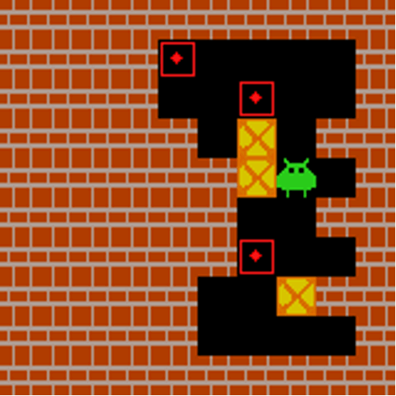
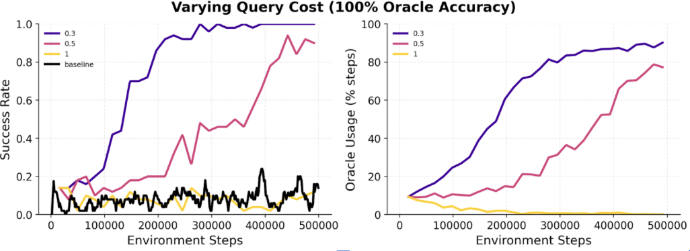
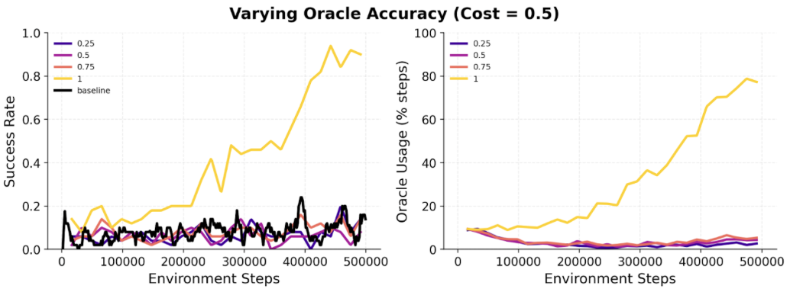

Column 1
Add a short description for the first video/image.
We introduce VALET (VLM-Assisted LEarning with Targeted queries), a framework that augments a PPO agent with an explicit, penalized query action to consult an expert (BFS Oracle or VLM) on demand. The agent learns endogenously when guidance is worth its cost \(c\), rather than querying blindly or following a hand-crafted schedule.
Experiments on MiniGrid-DoorKey and Sokoban show faster convergence, reduced variance, and self-regulated oracle usage. The querying behavior transfers zero-shot to unseen tasks, and the agent naturally stops querying when the oracle is not reliable enough. VALET demonstrates that RL agents can learn not just how to act, but when to ask for help.
RL agents are notoriously sample-inefficient, particularly in sparse-reward settings where rewards are rare and exploration is costly. They must discover task structure purely through trial and error, with no prior knowledge of the world.
VLMs, by contrast, encode rich semantic and visual knowledge acquired through large-scale pretraining. Yet querying them at every timestep is prohibitively expensive, and tying them rigidly to the learning loop removes any incentive for the agent to become autonomous.
The name VALET reflects the core design philosophy: like a valet who stands ready to assist but does not interfere unbidden, the VLM is available on demand and serves the agent only when called upon. Inspired by dual-process models of cognition [1], we treat the RL policy as a fast, reactive system, while the VLM acts as a slower, deliberative module. VALET extends the agent's action space with an explicit Query VLM action, which returns a suggested action based on the current state. To ensure efficiency, the agent is explicitly penalized by a cost \(c\) for querying, encouraging it to rely on external guidance only when truly necessary.
We evaluate VALET by addressing the following research questions:
Prior work on injecting external knowledge into RL falls into three categories.
Reward shaping. Kwon et al. [2], Du et al. [3], Klissarov et al. [4], and Rocamonde et al. [5] use LLMs or VLMs to evaluate the agent's actions and translate that evaluation into a bonus or penalty added to the reward. The VLM never decides what to do, it only scores what was done. VALET differs fundamentally: the VLM suggests an action, and the agent actively chooses whether to ask for it.
Foundation models as direct policies. RT-1 [6], RT-2 [7], and OpenVLA [8] replace the RL policy with a large vision-language-action model that produces an action at every timestep. This is powerful but prohibitively expensive at scale, and the agent has no incentive to become autonomous. VALET uses the VLM as an on-demand oracle rather than a permanent policy, querying it only when the agent decides it is worth the cost.
Most closely related. Merler et al. [9] augment a PPO agent with selective VLM supervision triggered by the entropy of the policy, the idea being that high-entropy states signal uncertainty and warrant guidance. VALET shares this intuition but goes further: instead of a hand-crafted entropy threshold, the query is an explicit action in the MDP. The agent discovers the cost–benefit trade-off on its own through the RL objective.
Framework Overview. VALET augments a standard Proximal Policy Optimization (PPO) agent with a dedicated query action that allows the agent to solicit a suggested action from an external expert. Formally, given an environment with action space \(\mathcal{A}\), we extend it to \(\mathcal{A}' = \mathcal{A} \cup \{\texttt{query}\}\). When the agent selects \(\texttt{query}\), it receives an expert-suggested action \(a^* \in \mathcal{A}\) as part of its next observation, and incurs a fixed query cost \(c \geq 0\) subtracted from the reward signal. All other actions are executed normally without any penalty. This formulation is entirely endogenous: no external scheduler or heuristic determines when to query. The agent discovers the cost-benefit trade-off on its own through the RL objective.
Training Setup. We train all agents using PPO with a clipped surrogate objective, generalized advantage estimation (GAE), and an entropy bonus to encourage exploration. The policy and value networks share a convolutional encoder that processes the top-down RGB observation. The observation is augmented with a binary flag indicating whether the last action was a query; when a query was made, the expert-suggested action is encoded as a one-hot vector.
Environments. We evaluate VALET on two environments of increasing complexity:
Oracles. We consider three oracle types behind the \(\texttt{query}\) action. First, a Breadth-First Search (BFS) oracle provides the optimal next action given the full environment state, serving as a perfect upper bound. Second, a noisy BFS oracle returns the optimal action with probability \(p\) and a random action otherwise, allowing us to simulate imperfect guidance at controllable accuracy without the computational cost of running a real VLM at every RL step. Third, a real VLM (Qwen2-VL with a verbose prompt) is evaluated as a drop-in replacement, serving as a practical but suboptimal expert.
Model Selection. We evaluate eight open-weight VLMs (2-8B parameters), including Qwen2-VL, Qwen2.5-VL, InternVL2.5, InternVL3, SmolVLM, and WeThink-Qwen2.5VL. Models are served via vLLM with deterministic decoding, and prompted with the top-down RGB observation alongside a brief textual state descriptor. We compare three prompt phrasings (if_then, negative_rules, and verbose) and report macro-F1 as the primary metric, since the action distribution is imbalanced and several models exhibit mode collapse.
Temporal Context. We also investigate whether providing a sliding window of past frames improves predictions, testing two history modalities: past actions as a text list, and past frames as stacked images.
To test whether the querying behavior learned on DoorKey generalizes to unseen tasks, we deploy trained agents directly on two new MiniGrid environments without any additional training or fine-tuning.
Transfer Environments. Both environments are structurally different from DoorKey and require new forms of reasoning:
Evaluated Agents. We test two agents: (i) the VALET agent trained on DoorKey with query cost \(c = 0.01\), which reached ~40% oracle usage at convergence; and (ii) a standard PPO agent trained on MiniGrid-DoorKey without any oracle access, serving as the baseline.
Action Decision Strategy. For the VALET agent, we compare two action selection strategies at inference time. The first uses argmax, always selecting the action with the highest policy probability. The second uses stochastic sampling, drawing actions from the policy distribution. The stochastic setup is particularly relevant: even a well-trained agent occasionally assigns a small probability to the query action, meaning that when the agent is stuck and repeatedly executing an incorrect move, it can spontaneously call the oracle to reset its trajectory. We track four metrics: success rate, episodic return, oracle usage, and trajectory efficiency (ratio of the shortest-path length to the actual number of steps taken).
We first validate the VALET framework using a perfect BFS oracle to establish an empirical upper bound. Agents are trained under varying query costs \(c \in \{0.00,\, 0.01,\, 0.02,\, 0.05\}\) and compared against an unguided PPO baseline (lower bound). We track episodic return, success rate, and oracle usage.

Figure 1. Training curves on MiniGrid-DoorKey-8×8-v0 under varying oracle costs \(c \in \{0.00, 0.01, 0.02, 0.05\}\). From left to right: episodic return, success rate, and oracle usage. Shaded regions indicate variance across seeds. Dashed line: unguided PPO baseline.
With \(c = 0\), the agent queries at nearly every step (~90%) and reaches maximum return almost immediately. With \(c = 0.01\) and \(c = 0.02\), oracle usage spikes early (~75%) then decays and stabilizes (~55-60%) as parts of the optimal policy are internalized, while both costs still achieve 100% success rate. The most striking result is at \(c = 0.05\): the agent eventually stops querying altogether, yet the early oracle-guided steps bootstrap learning and allow it to reach optimal success faster than the unguided baseline. Oracle access also markedly reduces variance across seeds, confirming that even brief expert supervision can both accelerate and stabilize PPO on sparse-reward tasks.
We then extend this experiment to a larger and more challenging setting: MiniGrid-DoorKey-16×16 with partial observability, where the agent only perceives a limited field of view rather than the full grid. Partial observability makes the task significantly harder, as the agent must navigate and plan under uncertainty. As shown in Figure 2, VALET not only scales to this harder setting but actually benefits more from oracle guidance: the gap between the oracle-assisted agents and the PPO baseline is larger than on the 8×8 grid, and the agent exhibits the same self-regulated querying behavior across all cost values. This confirms that VALET is particularly well-suited to environments where the agent's limited view creates genuine uncertainty that the oracle can help resolve.

Figure 2. Training curves on MiniGrid-DoorKey-16×16 with partial observability, under a sweep of oracle costs (blue to orange, increasing cost). From left to right: episodic return, success rate, oracle usage, and oracle queries per episode. VALET consistently outperforms the PPO baseline (dashed), with larger gains than on the 8×8 grid.
Closer inspection of the best-performing setup (\(c = 0.012\)) on the 16×16 environment reveals an interpretable querying strategy: the agent has effectively learned only two behaviors, going forward and calling the oracle, and triggers the oracle predominantly when no object is visible in its field of view. This suggests that the agent has internalized a meaningful exploration heuristic: navigate autonomously when the scene provides no useful signal, and delegate to the expert when guidance is needed. The video shows this behavior in action. A key limitation, however, is that replacing the BFS oracle with a VLM of equivalent quality requires a model capable of near-optimal action prediction, which remains prohibitively expensive at inference time.
Before integrating a real VLM as the oracle, we benchmark candidate models on a 300-sample MiniGrid evaluation set annotated by the BFS oracle. Figure 3 shows the macro-F1 vs. latency trade-off across models and prompt variants.

Figure 3. Macro-F1 vs. mean inference latency for the evaluated VLMs under three prompt variants. Top-left is best. Qwen2-VL with the verbose prompt achieves the best macro-F1 score.
No model-prompt combination exceeds a macro-F1 of 0.40, and prompt phrasing alone shifts performance by more than 20 absolute points within a single model. Based on these results, we select Qwen2-VL with the verbose prompt as our best configuration. We also investigate whether providing temporal context (action history as text or stacked past frames) improves predictions. As shown in Figure 4, neither modality yields a notable improvement, suggesting that the bottleneck lies in zero-shot spatial reasoning rather than the lack of temporal context.

Figure 4. Macro-F1 as a function of the number of past frames provided to the VLM, for text-based action history and image-based history. Neither modality shows a notable improvement over the single-frame baseline.
Having selected WeThink-Qwen2.5VL 7B with the best-performing prompt configuration, we replace the BFS oracle with this VLM directly in the VALET training loop. At each query, the agent receives the VLM's suggested action instead of the BFS-optimal one. As shown in Figure 5, the results are largely inconclusive: no configuration clearly outperforms the PPO baseline, and the VLM's accuracy against the BFS oracle remains below 35% throughout training.
The most striking failure is at cost \(c = 0\): since querying is free, the agent queries the VLM more, and because the VLM guidance is poor, it actively hurts performance, making this the worst-performing configuration. At higher costs, the agent queries less frequently and performs closer to the baseline, but never significantly above it. These results confirm that at ~35% accuracy, the VLM does not provide reliable enough guidance to benefit the agent. This motivates the noisy oracle ablation in the following section, where we systematically study what accuracy threshold is required for the oracle to add value.

Figure 5. Training curves on MiniGrid-DoorKey-8×8-v0 with WeThink-Qwen2.5VL 7B as the oracle, under varying query costs. From left to right: episodic return, success rate, queries per episode, and VLM accuracy vs. BFS. The cost=0 condition (free queries) performs worst due to the agent over-relying on a low-accuracy VLM (~35%).
The VLM integration results raise a natural question: does the VALET framework itself work, or is the lack of improvement simply due to the VLM being too weak? To answer this, we decouple the framework from the VLM quality by simulating oracles of controlled accuracy. A noisy oracle returns the BFS-optimal action with probability \(p\) and a uniformly random action with probability \(1-p\), simulating a VLM with \(p\%\) accuracy. By sweeping \(p\) across a range of values, we can identify the accuracy threshold above which oracle guidance actually benefits the agent.
As shown in Figure 6, the results confirm that the framework is sound. Above the accuracy threshold, the agent queries more frequently and achieves significantly better performance, and a sufficiently accurate oracle unlocks near-perfect success rates. Below the threshold, the agent naturally stops calling the oracle altogether, self-regulating its querying behavior through the cost signal alone.
This last finding is particularly significant. It means that providing an agent with access to a low-quality VLM carries no risk: rather than being misled, the agent simply learns to ignore it. One can safely deploy VALET with any available VLM, and the agent will only benefit from it if the guidance is reliable enough. There is no downside, only a potential upside.
This also opens an interesting avenue for future work: a trained VALET agent could serve as an automatic benchmark for VLM quality. By simply measuring its oracle usage rate when paired with a given VLM, one can infer whether that VLM is accurate enough to be useful, without any labeled data or manual evaluation.

Figure 6. Final success rate (top) and oracle queries per episode (bottom) vs. oracle accuracy \(p\). The red dotted line marks the current VLM accuracy (~35%). Below the threshold the agent stops querying; above it, performance increases sharply.
We deploy the VALET agent trained on DoorKey-16×16 directly on two structurally different tasks, without any retraining. We compare it against a standard PPO baseline and evaluate both argmax and stochastic action selection. The stochastic variant consistently outperforms argmax: by sampling from the policy distribution rather than always picking the top action, the agent retains a small probability of selecting the query action at every step. This acts as a natural escape mechanism, when the agent gets stuck repeating the same incorrect move, it can spontaneously call the oracle to reset its trajectory, rather than looping indefinitely.
In the Fetch task, multiple objects are placed on the grid and the agent must pick up the correct one based on a language instruction. The PPO baseline achieves only 6% success rate, struggling to interpret the instruction without prior training. The VALET agent with stochastic sampling reaches 100% success, with a trajectory efficiency of 0.87, meaning it follows a near-optimal path while calling the oracle roughly 60% of the time. The argmax variant also succeeds (69%) but with less flexibility. This confirms that the query behavior learned on DoorKey transfers directly to instruction-following tasks.

Figure 7. Zero-shot transfer on Fetch (100 episodes). Success rate, mean return, oracle queries, and trajectory efficiency for Oracle 0.01 argmax, Oracle 0.01 stochastic, and PPO baseline.
Simulation of the VALET agent (stochastic) on the Fetch task.

Simulation of the VALET agent (stochastic) on the MultiRoom task.
In the MultiRoom task, the agent must open a sequence of doors to navigate through multiple connected rooms. This requires longer-horizon planning than DoorKey. The PPO baseline completely fails with 0% success, unable to chain the required sub-goals. Both VALET variants succeed with near-perfect rates (97% argmax, 100% stochastic) and trajectory efficiencies of 1.00 and 0.98 respectively, meaning the oracle guidance yields essentially optimal paths. Oracle usage is high (~75-80%), reflecting the genuine complexity of the task, yet the agent still succeeds efficiently. This demonstrates that VALET generalizes not just to new objects but to entirely new task structures.

Figure 8. Zero-shot transfer on MultiRoom (100 episodes). Success rate, mean return, oracle queries, and trajectory efficiency for Oracle 0.01 argmax, Oracle 0.01 stochastic, and PPO baseline.
To verify that VALET generalizes beyond MiniGrid, we train and evaluate it on Gym-Sokoban, a significantly harder environment with irreversible actions and longer planning horizons. As shown below, the same framework applies without modification: the agent learns to self-regulate its oracle usage as a function of query cost, and the noisy oracle ablation confirms the same accuracy threshold behavior as on MiniGrid. VALET works.

VALET agent navigating the Sokoban environment.

Figure 9. Training curves on Sokoban under varying oracle costs. Oracle-assisted agents consistently outperform the PPO baseline, with oracle usage self-regulating as cost increases.

Figure 10. Sokoban results under varying oracle accuracy. The agent stops querying below the accuracy threshold and benefits increasingly from more reliable guidance, confirming the same behavior observed on MiniGrid.
VALET agents learned to query the oracle selectively and purposefully, concentrating calls at genuine decision points rather than blindly delegating at every step. Across all experiments, the agent self-regulates its oracle usage as a function of query cost and oracle quality: it queries heavily when guidance is cheap and reliable, reduces usage as the policy matures, and stops querying entirely when the oracle is not worth its cost. The zero-shot transfer results further show that this querying behavior is not task-specific but generalizes to structurally different environments never seen during training. VALET therefore demonstrates that RL agents can learn not just how to act, but when to ask for help.
Compute constraints. All VLM evaluations in this project were restricted to open-weight models in the 2-8B parameter range, due to compute budget limitations. Stronger frontier models may yield significantly higher action accuracy, potentially crossing the threshold above which VLM guidance genuinely benefits the agent. Whether such models would make VALET fully end-to-end remains an open question.
Full observability assumption. All experiments were conducted in environments where the BFS oracle observes the full environment state, which is a strong assumption. In more realistic settings, both the agent and the expert would only perceive a partial view of the world, making reliable guidance harder to provide. Extending VALET to partially observable oracles is an important direction for future work.
Are open-weight VLMs the bottleneck? The noisy oracle results show that performance improves sharply once oracle accuracy exceeds a threshold. Would stronger frontier models, evaluated from the agent's own point of view rather than with full state access, unlock reliable enough guidance to make VALET fully end-to-end with a real VLM?
VALET as a VLM benchmark. As discussed in the noisy oracle section, the oracle usage rate of a trained VALET agent could serve as an automatic proxy for VLM quality, without any labeled data. This could provide a lightweight, deployment-time method for evaluating and comparing VLMs in decision-making settings.
Transfer to continuous environments. All experiments use discrete action spaces. Can VALET agents learn when to ask for help in high-dimensional, continuous action spaces, such as robotic manipulation or locomotion tasks? Extending the framework to continuous control would significantly broaden its applicability.
Here you can see possible visualizations that can be used in this website

Start Frame

End Frame
Add a short description for the first video/image.
Add a short description for the second video/image.

\[ D_{\mathrm{KL}}(P \parallel Q) = \sum_{x} P(x)\,\log\!\left(\frac{P(x)}{Q(x)}\right) \]
The table format below can be used for results and other purposes.
| Method | Metric 1 | Metric 2 | Notes |
|---|---|---|---|
| Baseline | 0.00 | 0.00 | Reference setup |
| Method A | 0.00 | 0.00 | First variant |
| Method B | 0.00 | 0.00 | Second variant |
[1] D. Kahneman, Thinking, Fast and Slow. Allen Lane, 2011.
[2] M. Kwon, S. M. Xie, K. Bullard, and D. Sadigh, "Reward design with language models," ICLR, 2023.
[3] Y. Du et al., "Guiding pretraining in reinforcement learning with large language models," ICML, 2023.
[4] M. Klissarov et al., "Motif: Intrinsic motivation from artificial intelligence feedback," NeurIPS Workshop on Foundation Models for Decision Making, 2023.
[5] J. Rocamonde et al., "Vision-language models are zero-shot reward models for reinforcement learning," ICLR, 2024.
[6] A. Brohan et al., "RT-1: Robotics transformer for real-world control at scale," arXiv:2212.06817, 2022.
[7] A. Brohan et al., "RT-2: Vision-language-action models transfer web knowledge to robotic control," arXiv:2307.15818, 2023.
[8] M. J. Kim et al., "OpenVLA: An open-source vision-language-action model," arXiv:2406.09246, 2024.
[9] M. Merler, G. Bonetta, and B. Magnini, "Guiding reinforcement learning with selective vision-language model supervision," ECAI Workshop CAIPI'25, 2025.
[10] M. Chevalier-Boisvert, B. Dai, M. Towers, R. de Lazcano, L. Willems, S. Lahlou, S. Pal, P. S. Castro, and J. Terry, "Minigrid & miniworld: Modular & customizable reinforcement learning environments for goal-oriented tasks," arXiv:2306.13831, 2023.
[11] M.-P. B. Schrader, "gym-sokoban," https://github.com/mpSchrader/gym-sokoban, 2018.


{kind=link}
{kind=link}